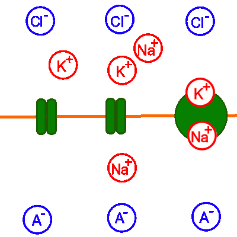

Erregungsleitung (elektrisch): Aktionspotenzial
Refraktärphase

Abb. 1: Nur Refraktärphase
- Zellmembran;
Membranproteine (von links nach rechts):
Spannungsabhängiger Kaliumionenkanal (Kanalprotein);
Spannungsabhängiger Natriumionenkanal (Kanalprotein);
Natrium-Kalium-Pumpe (Carrierprotein);
- Zelläußeres:
Natriumionen;
Chloridionen;
- Zellinneres:
Kaliumionen;
Anionische Protein-Seitenketten;
- Alle spannungsabhängigen Kanalproteine sind geschlossen und können sich einige Zeit lang nicht wieder öffnen.
Das Schwellenpotenzial ist daher in dieser Phase sehr stark erhöht - Nach Außen hin ist bereits wieder der Wert des Ruhepotenzials erreicht, allerdings werden die vorher gewanderten Ionen
unter hohem Energieaufwand mit Hilfe der Natrium-Kalium-Pumpe wieder auf ihre Ursprungsseite transportiert.
(Natriumionen zurück nach außen, Kaliumionen zurück nach innen)

Abb. 2: Kompletter Ablauf
- Der spannungsabhängige Natriumionenkanal öffnet sich
- Natriumionen strömen ein
- Es kommt zur Depolarisation und schließlich zur Ladungsumkehr
- Der spannungsabhängige Natriumionenkanal schließt sich
- Der spannungsabhängige Kaliumionenkanal öffnet sich
- Kaliumionen strömen aus
- Es kommt zur Re- und Hyperpolarisation (diese wird in der Modellanimation nicht dargestellt!)
- Alle spannungsabhängigen Kanalproteine sind geschlossen und können sich einige Zeit lang nicht wieder öffnen.
Das Schwellenpotenzial ist daher in dieser Phase sehr stark erhöht - Nach Außen hin ist bereits wieder der Wert des Ruhepotenzials erreicht, allerdings werden die vorher gewanderten Ionen unter hohem Energieaufwand mit Hilfe der Natrium-Kalium-Pumpe wieder auf ihre Ursprungsseite transportiert (Natriumionen zurück nach außen, Kaliumionen zurück nach innen).

Abb. 3: Kurvenverlauf im Spannungs-Zeit-Diagramm
- Ruhepotenzial;
- Depolarisation;
- Re- und Hyperpolarisation;
- Refraktärphase;